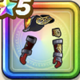

レイジングメイル上
攻略班 8.0点 / ドルマ属性耐性+5%デイン属性耐性+5%ドルマ属性耐性+5%ヒャド属性耐性+5%【バトマス】スキルの斬撃ダメージ+2%ギラ属性斬撃・体技ダメージ+6%HP100%以上の時ギラ属性斬撃・体技ダメージ+3%
くわしい特徴
【レベル別習得スキル】 Lv1ドルマ属性耐性+5% Lv5さいだいMP+9 Lv8きようさ+10 Lv10デイン属性耐性+5% Lv12【バトマス】スキルの斬撃ダメージ+2% Lv15ギラ属性斬撃・体技ダメージ+6% Lv18ドルマ属性耐性+5% Lv20HP100%以上の時ギラ属性斬撃・体技ダメージ+3% Lv23守備力+7 Lv25ヒャド属性耐性+5% 【限界突破スキル】 1凸攻撃力+7 2凸守備力+5 3凸すばやさ+10 4凸さいだいHP+10